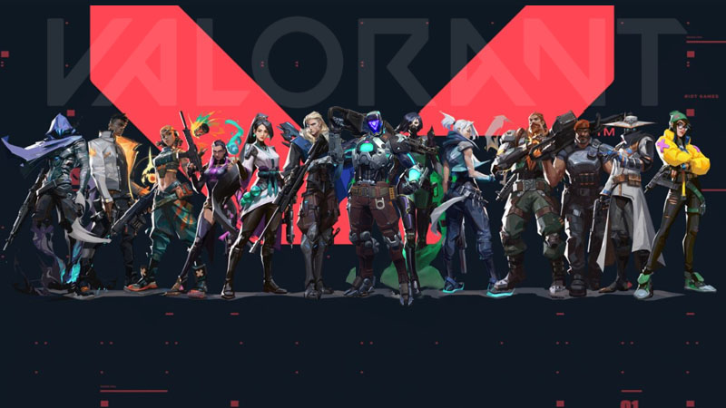
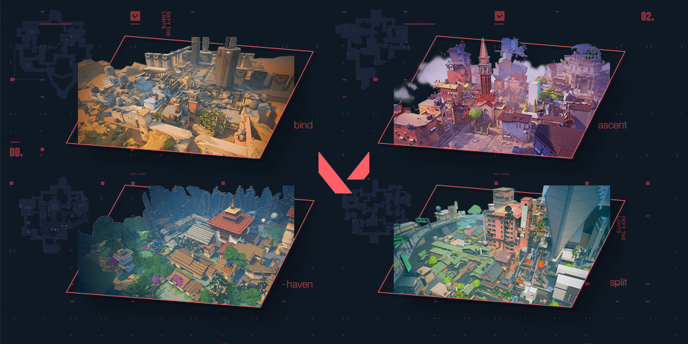
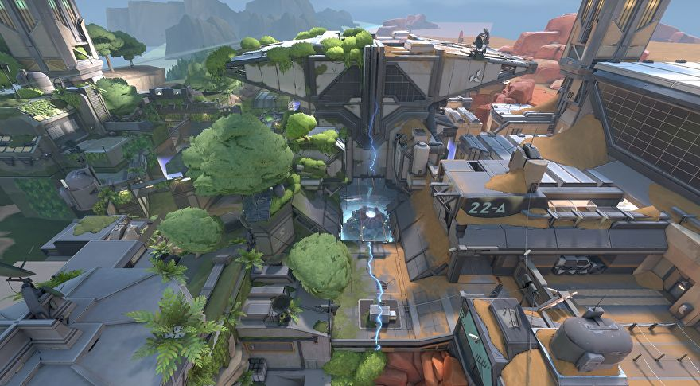
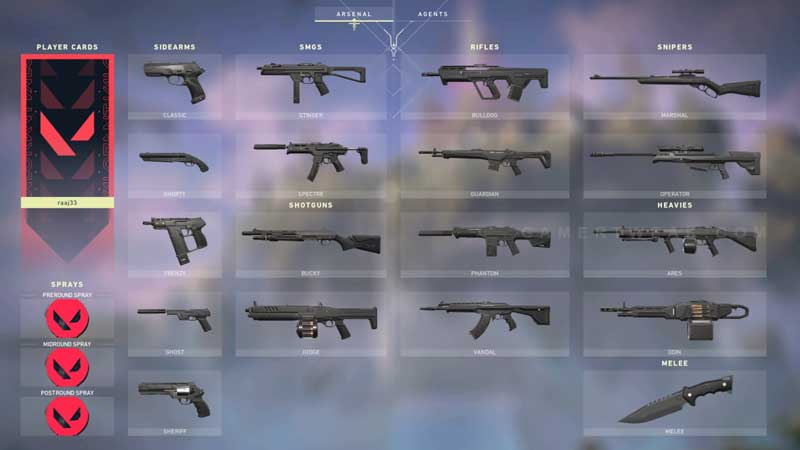
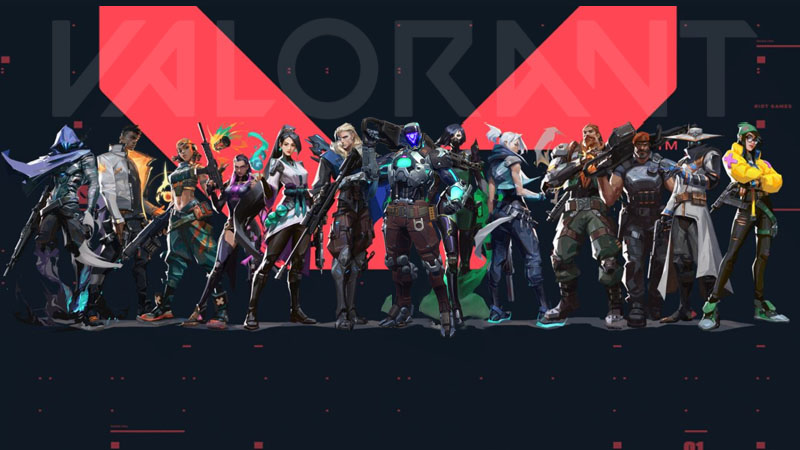
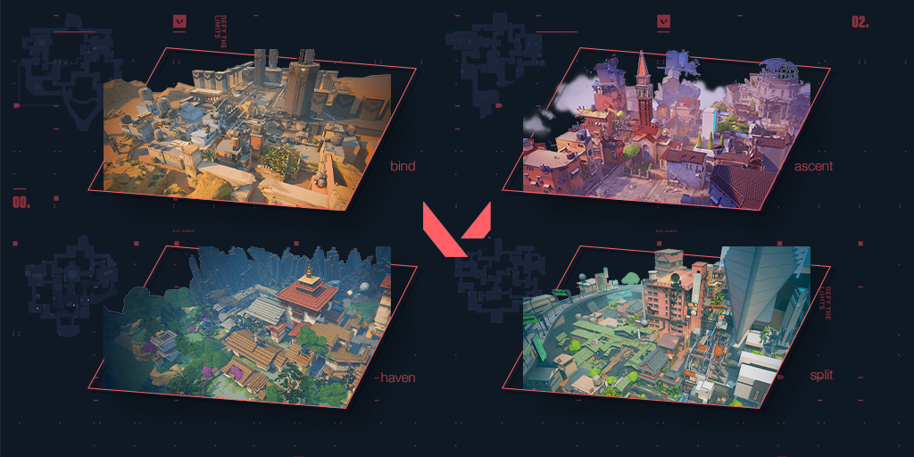
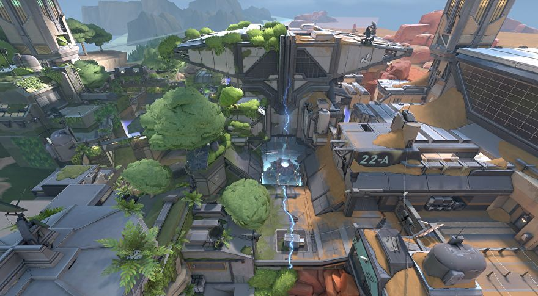
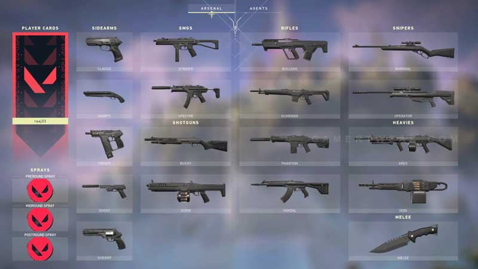

VALORANT is a free-to-play first-person shooter game released by Riot Games in June 2020. Since then, the game has been rising to become one of the most played games at the moment. In this website, you will be able to read about its origin, basic mechanics, weapons, agents, and maps.
ABOUT THE GAME
The game is a 5v5 character-based tactical shooter. As of now there are 17 agents with their own unique skills and abilities that add to the basic mechanics of a tactical shooter game. Each player has their own style of playing the game by combining sharp gunplay with said abilities. There are multiple game modes to choose from, but in the main game mode, you have 13 rounds to either attack or defend sites. You are given only one life per round which means you have to think on your feet as there are no second chances.
PLAY FOR FREE
BASIC MECHANICS
Before the game starts, you are to choose an agent you want to pick for the game. Each agent has their own abilities and roles, so it is up to you and your team to determine a good agent lineup. The game is split into two halves wherein you are either attacker or defender for each half. Both halves start with a pistol round; from there, you are to gradually build up your economy to buy better guns. You can earn credits (in-game money) by winning rounds, killing enemies, and planting the spike (as attackers). Each half lasts 12 rounds—the first team to win 13 rounds wins the game. The objective of the game is to defend sites or detonate the bomb, AKA the spike.
 






